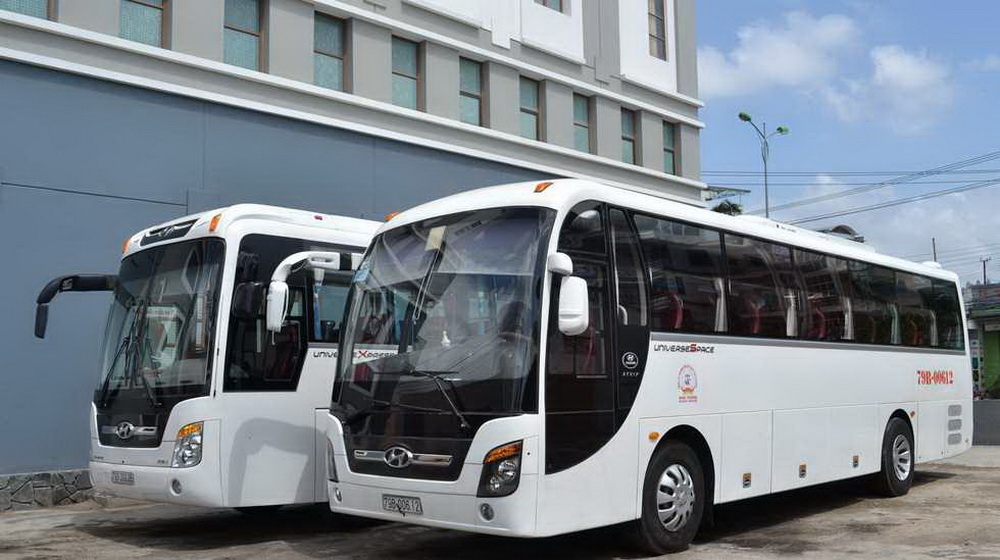

CHO THUÊ XE Ô TÔ DU LỊCH 45 CHỖ GIÁ RẺ TẠI TPHCM
Thuê xe 45 chỗ là dịch vụ cung cấp xe ô tô chở khách có sức chứa tối đa 45 người và đây là dịch vụ phổ biến trong lĩnh vực du lịch, vận chuyển nhóm đông người hoặc tổ chức các sự kiện đặc biệt. Khách hàng có thể thuê xe 45 chỗ để tham quan du lịch, đi công tác, đi đám cưới, hội nghị, lễ hội hoặc các hoạt động nhóm khác. Vậy thuê xe 45 chỗ giá rẻ tại TP. HCM ở đâu tốt nhất? Dịch vụ thuê xe 45 chỗ nào chất lượng? Giá thuê xe du lịch 45 chỗ bao nhiêu tiền? Qua đây, Trí Tài sẽ giải đáp hết tất cả các thắc mắc của quý khách hàng, theo dõi đến cuối bài viết để biết thêm chi tiết!
Dịch vụ cho thuê xe du lịch
Công ty dịch vụ của chúng tôi là một dịch vụ cho thuê xe chất lượng cao, uy tín và trách nhiệm, với đội ngũ lái xe chuyên nghiệp, giàu kinh nghiệm và am hiểu về các tuyến đường, địa điểm du lịch trên khắp nước. Với Trí Tài, việc mang đến sự thoải mái, an toàn và thuận tiện cho khách hàng là ưu tiên hàng đầu. Chúng tôi cam kết mang đến cho quý khách hàng những chiếc xe đời mới, được bảo trì, sửa chữa và vệ sinh thường xuyên để đảm bảo sự an toàn và tiện lợi nhất trong quá trình sử dụng. Ngoài ra, với đội ngũ lái xe chuyên nghiệp của Trí Tài, khách hàng sẽ được trải nghiệm những chuyến đi tình ái, an toàn và đầy thú vị. Bên cạnh đó, dịch vụ cho thuê xe Trí Tài luôn đảm bảo giá cả cạnh tranh và luôn có chính sách giảm giá đặc biệt cho khách hàng thuê xe trong thời gian dài. Chúng tôi sẽ luôn cam kết với quý khách hàng về chất lượng dịch vụ và trách nhiệm của chúng tôi đối với từng chuyến đi.
Thuê xe 45 chỗ tại Trí Tài gồm những loại xe nào?
Khách hàng thuê xe 45 chỗ có thể khác nhau tùy thuộc vào nhu cầu và mục đích sử dụng của từng đoàn khách cụ thể.
Cho thuê xe 45 chỗ đi du lịch và tham quan.
Cho thuê xe 45 chỗ để tổ chức sự kiện,phục vụ di chuyển trong các bữa tiệc.
Cho thuê xe du lịch 45 chỗ tại TPHCM đi công tác và làm việc
Cho thuê xe 45 chỗ tại TPHCM di chuyển nội thành hoặc đi từ thành phố này sang thành phố khác.
Cho thuê xe 45 chỗ đưa đón sân bay
Dòng xe 45 chỗ nổi bật tại công ty du lịch chúng tôi
Dưới đây là một số hãng xe khách 45 chỗ nổi tiếng và những điểm nổi bật:
Hyundai: Được nhiều người coi trọng vì thiết kế sang trọng, nội thất rộng rãi và tiện nghi, động cơ mạnh mẽ và tiết kiệm nhiên liệu.
Isuzu: Khả năng chịu tải cao, động cơ bền bỉ và ổn định, phù hợp với nhiệm vụ vận chuyển nhóm lớn.
Space: Xe được trang bị nhiều tiện nghi như màn hình giải trí, hệ thống điều hòa không khí, chăn ga gối đệm và cửa sổ điện.
Universe: Ổn định, tiết kiệm nhiên liệu và an toàn, được trang bị nhiều tiện nghi, chăn ga gối đệm, hệ thống điều hòa không khí, cửa sổ điện và hệ thống giải trí cá nhân.
Thaco Town: Có thiết kế hiện đại và sang trọng, được trang bị nhiều tính năng an toàn, nhiều tiện nghi như ghế nệm êm ái, hệ thống âm thanh cao cấp, điều hòa không khí.
Các điểm nổi bật của các hãng xe khách 45 chỗ là chất lượng và độ bền, tính an toàn và tiện ích cao, đáp ứng nhu cầu chuyển đổi của khách hàng một cách tốt nhất. Hyundai là loại xe phổ biến được cho thuê tại Trí Tài và màu sắc phổ biến thường được áp dụng cho loại xe 45 chỗ này là: Trắng, Đen, Bạc, Xám, Vàng cát, Đỏ. Trong đó, màu trắng thường được ưa chuộng nhất vì tính sang trọng, trang nhã và dễ lau chùi.
Bảng giá thuê xe 45 chỗ khu vực TP. HCM
Bảng giá thuê xe 45 chỗ phù hợp sẽ phụ thuộc vào nhiều yếu tố như thời gian thuê, khoảng cách di chuyển, loại xe, tình trạng phương tiện tiện lợi, dịch vụ đi kèm và các yêu cầu đặc biệt khác của khách hàng. Tuy nhiên, ở Việt Nam, giá thuê xe 45 chỗ thường dao động từ khoảng 6 triệu đồng đến 15 triệu đồng cho một chuyến đi xa trong ngày. Nếu khách hàng thuê xe theo tuần hoặc theo tháng, giá sẽ được tính theo thỏa thuận và thường có mức ưu đãi hơn. Để tìm được bảng giá thuê xe 45 chỗ phù hợp, khách hàng nên liên hệ trực tiếp với Trí Tài để được tư vấn và báo giá cụ thể.
Thuê xe 45 chỗ và những lưu ý cần thiết về giá cả
Khi thuê xe 45 chỗ, cũng giống như các loại xe khác, giá cả sẽ phụ thuộc vào nhiều yếu tố như thời gian thuê, quãng đường di chuyển, số lượng khách đi cùng, loại xe cần thuê, và các chi phí phát sinh khác. Dưới đây là một số lưu ý đặc biệt về giá cả khi thuê xe 45 chỗ:
Thời gian thuê: Thời gian thuê sẽ ảnh hưởng đến giá cả, nếu thuê trong ngày thì giá sẽ thấp hơn so với thuê trong nhiều ngày, hoặc thuê theo tháng.
Loại xe: Loại xe cũng ảnh hưởng đến giá cả. Các xe thương hiệu nổi tiếng, đời mới, tiện nghi cao sẽ có giá cao hơn so với các xe đời cũ hoặc không có tiện nghi cao.
Các chi phí phát sinh khác: Ngoài giá thuê cơ bản, còn có thể phát sinh các chi phí khác như phí đỗ xe, phí làm thủ tục, phí bảo hiểm, phí phát sinh khi đi đường, và các chi phí khác.
Liên hệ báo giá